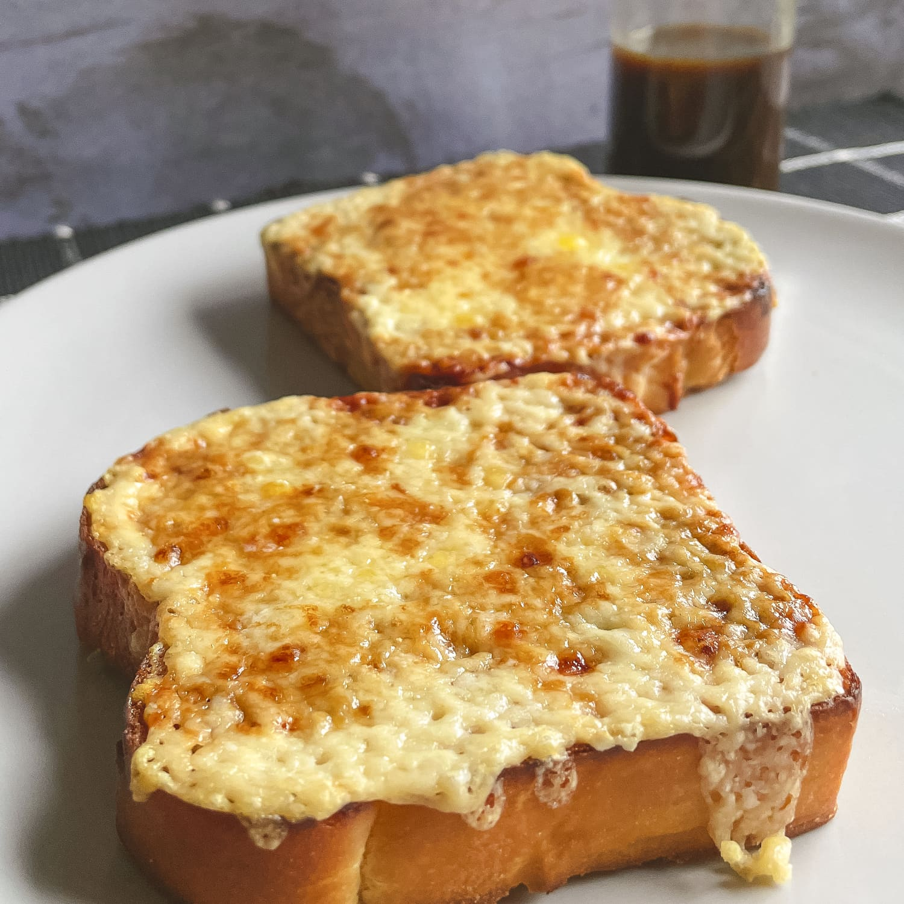

Cheese on Toast


Description
Cheese on toast is a very quick and easy dish that tastes great. Got bread? Got cheese? Got heat? Let's go!

Ingredients
- 1x slice of bread
- 1x slice of cheese
- sauce (optional)

Steps
- Get your bread to room temperature.
- Slice enough cheese to cover one side of the bread but do not keep the cheese applied, move it to one side.
- Place enough foil to host your bread on the oven rack and preheat to 180 degrees celsius.
- Then, place your bread on the foil and let it cook until the top side is golden brown.
- Next, flip the bread over and apply the cheese to the un-toasted side.
- Leave it cook for another few minutes until the cheese starts to lightly bubble (watch carefully).
- Finally remove your cheese on toast from the oven and leave it cool off for a couple of minutes before eating.